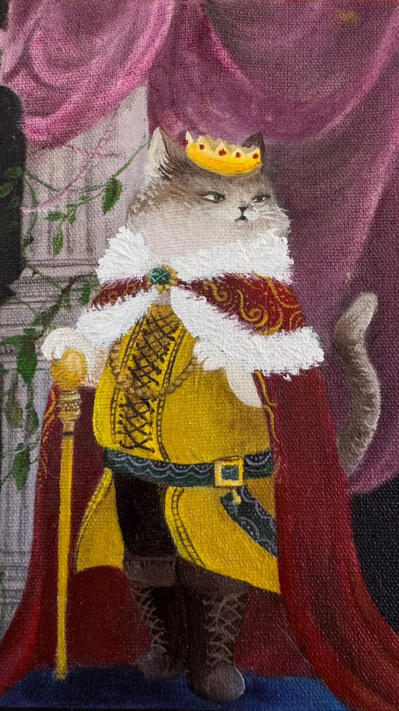
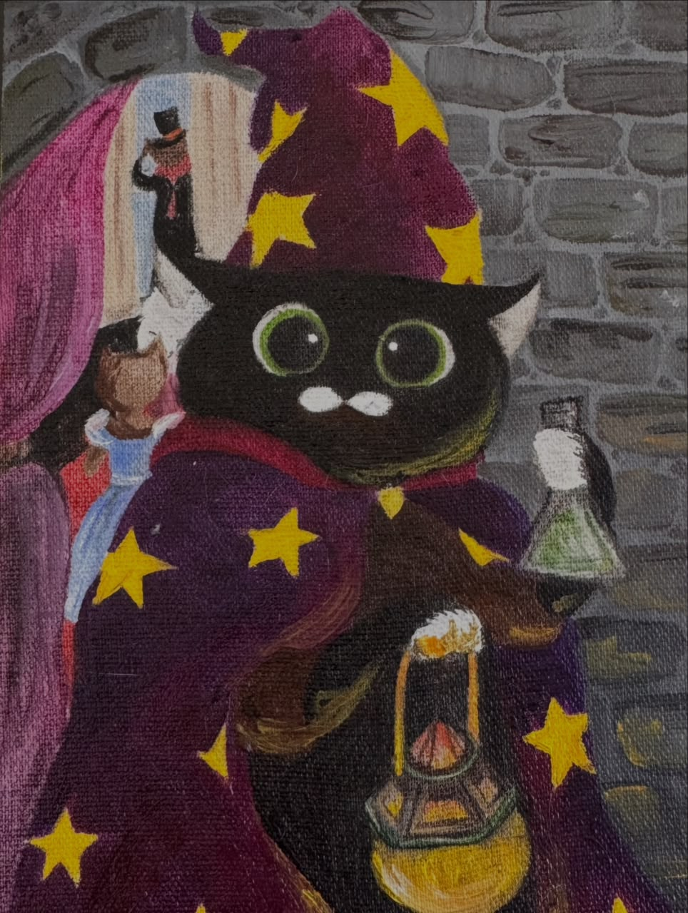
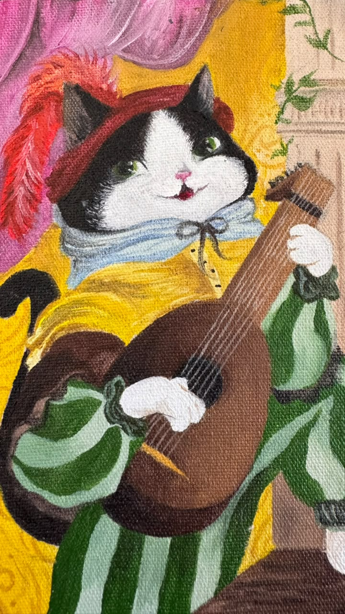
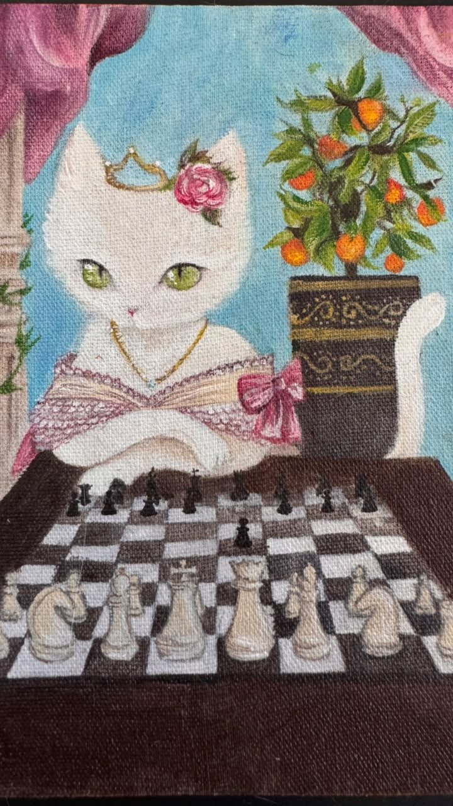
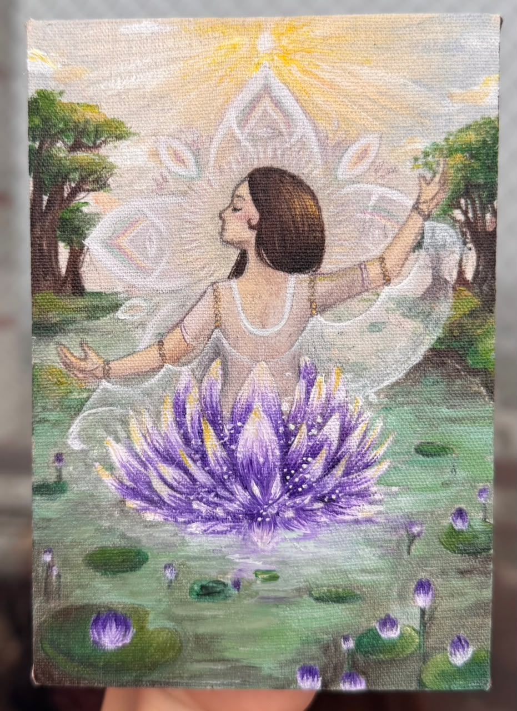
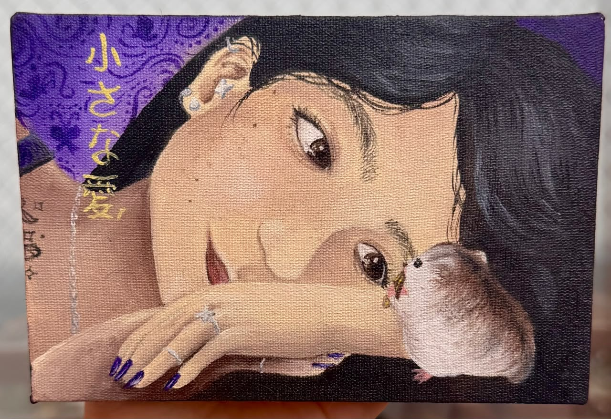

Cada obra é criada com um simples intuito:
permitir que minha alma faça aquiloque ela anseia
Autoral | Pintura a Óleo,10x15 cm




Autoral | Pintura a Óleo,10x15 cm


Desde que me entendo por gente, estou envolvida com tintas, pinceis, lápis e papéis. Por algum motivo (que ainda busco descobrir a origem) sempre fui atraída pelo criar. Hoje, posso dizer que a arte é a minha vida. Através dela, consigo expressar sentimentos, emoções e pensamentos que muitas vezes não consigo colocar em palavras. Além das telas, eu amo consertar objetos quebrados, criar seres místicos com argila e colecionar folhas e pedras que encontro pela vida a fora.